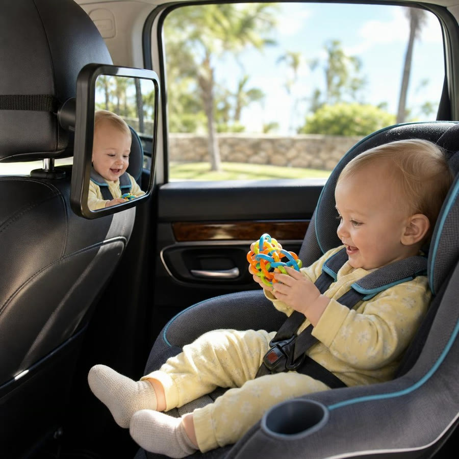
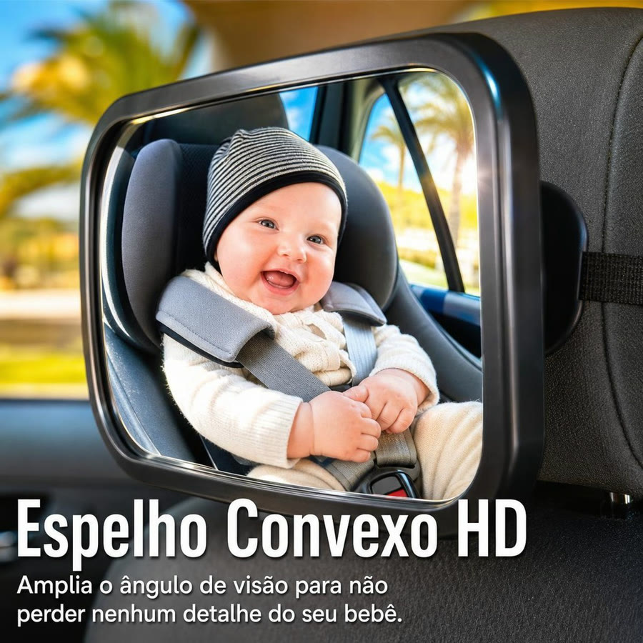
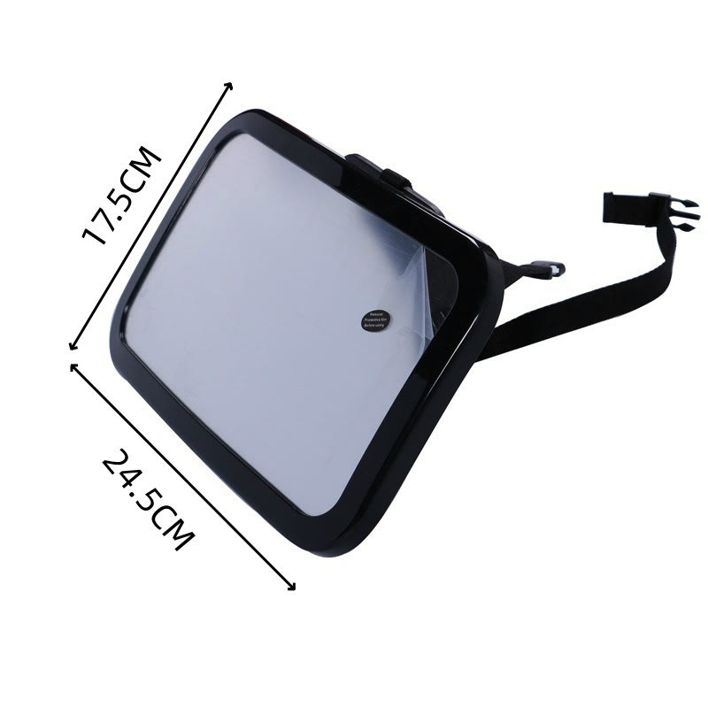
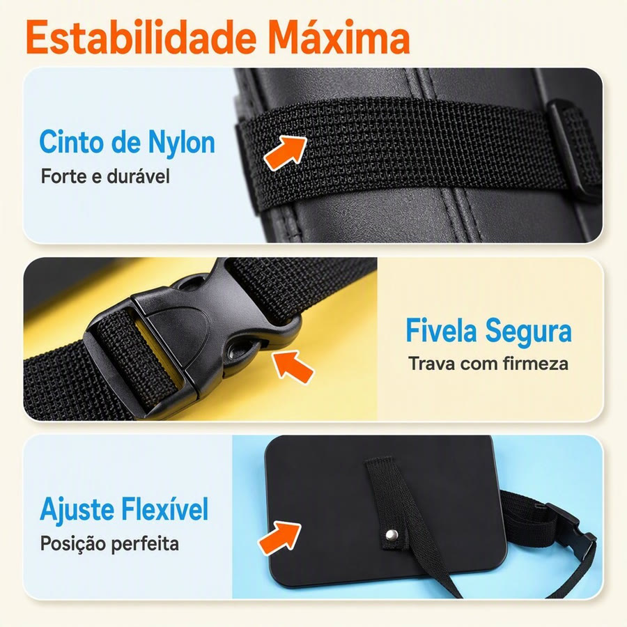
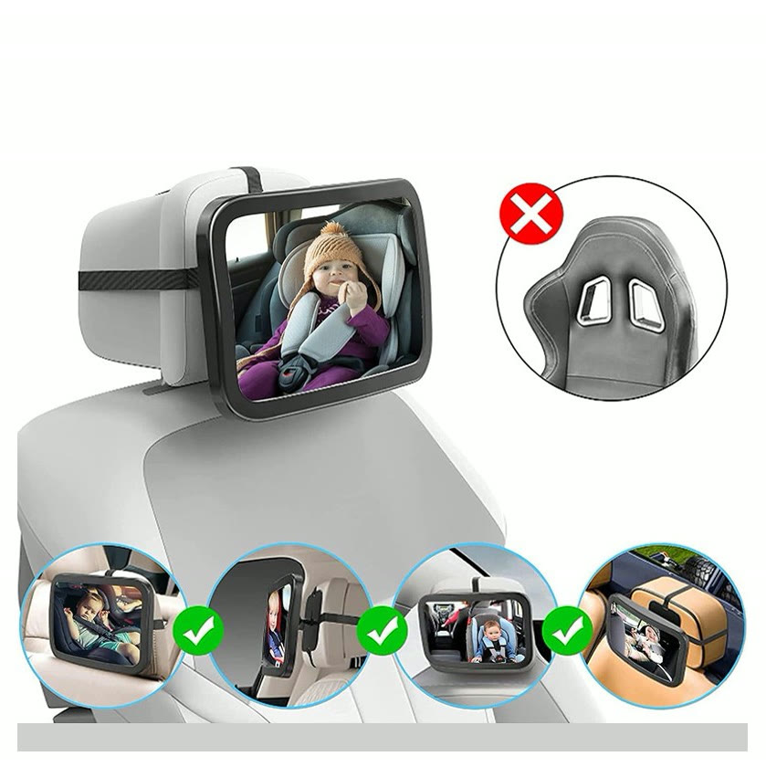
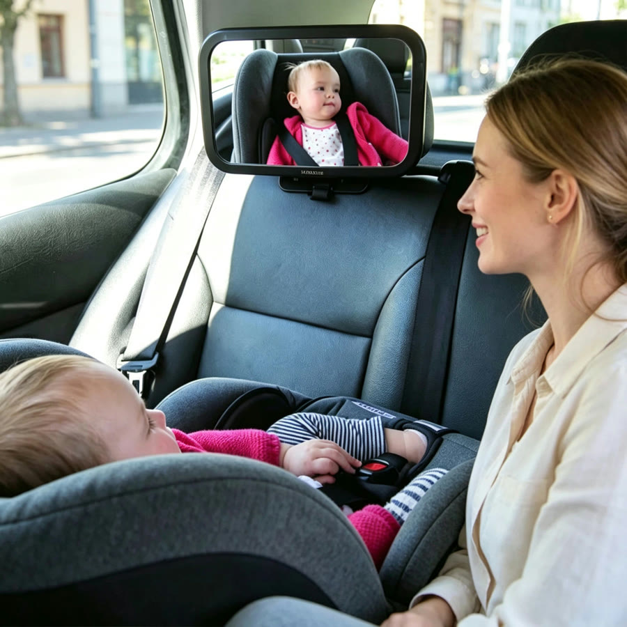
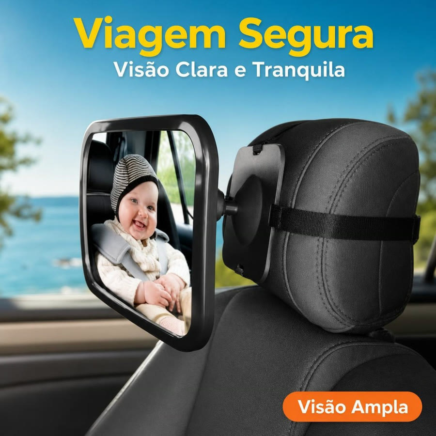

Achado nº 119
Bebê virado pra trás e você torcendo o pescoço?
Espelho para o banco traseiro: ver o bebê no bebê-conforto virado para trás
★ 4,8 · mais de 1.900 avaliações na Shopee







O que diz a página oficial do produto
- É um espelho retangular preso no encosto de cabeça do banco traseiro com uma cinta de nylon e fivela
- Serve para o motorista ver, pelo retrovisor do carro, o bebê no bebê-conforto ou na cadeirinha virada para trás
- Segundo o anúncio, o espelho é convexo, gira 360 graus para ajustar o ângulo e tem um mecanismo para não balançar
- Segundo o anúncio, o material é inquebrável
- Mede 24,5 por 17,5 cm
- O anúncio vende 1, 2 ou 3 unidades
- Na Shopee, tem nota 4,8 com mais de 1.900 avaliações
Link de afiliado: se você comprar por ele, a Achadaria pode receber uma comissão, sem custo extra para você. Preço, estoque e entrega são da loja e podem mudar; confira lá antes de comprar.